library(ggplot2)
library(scales)
library(dplyr)
aluguel <- readr::read_csv(
here::here("posts/ggplot2-tutorial/rents_liberdade.csv"),
show_col_types = FALSE
)Tipos de variáveis
Variáveis discretas
Variáveis contínuas
scale_y_continuous()scale_y_discrete()scale_x_continuous()scale_x_discrete()
A mesma lógica se aplica para aplicar cores
scale_color_continuousscale_color_discretescale_fill_continuousscale_fill_discrete
Vamos aprender a mexer com algumas paletas de cores pré-definidas
scale_*_viridis()scale_*_brewer()scale_*_manual()scale_*_distiller()
ggplot(aluguel, aes(x = area, y = rent)) +
geom_count() +
scale_x_binned() +
scale_y_binned()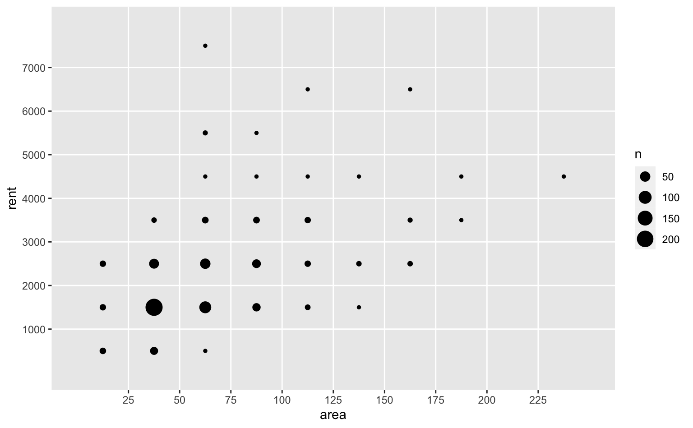
ggplot(aluguel, aes(x = area, y = rent)) +
geom_point() +
scale_x_continuous(breaks = seq(0, 250, 25))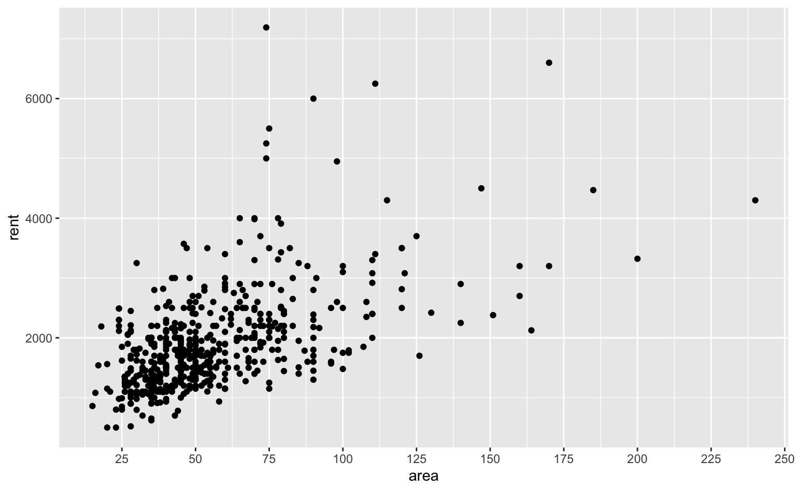
ggplot(aluguel, aes(x = area, y = rent)) +
geom_point() +
scale_x_continuous(breaks = seq(0, 250, 25), limits = c(0, 100))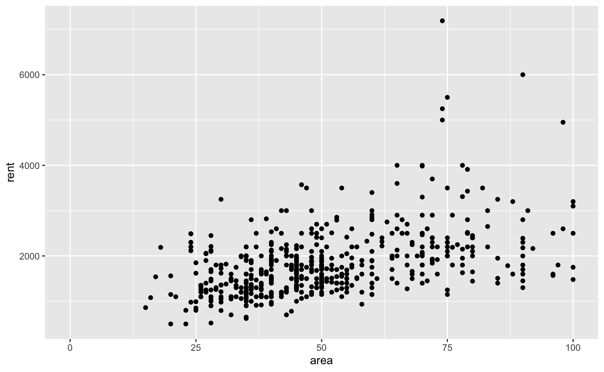
ggplot(aluguel, aes(x = area, y = rent)) +
geom_point() +
scale_x_continuous(breaks = seq(0, 250, 25)) +
scale_y_continuous(
breaks = seq(0, 7000, 1000),
labels = label_dollar(big.mark = ".")
)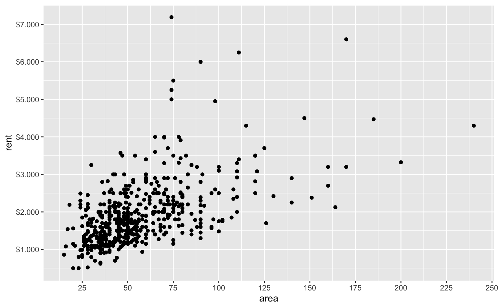
ggplot(aluguel, aes(x = area, y = rent)) +
geom_point() +
scale_y_log10()
ggplot(aluguel, aes(x = area, y = rent)) +
geom_point() +
scale_y_continuous(trans = "log")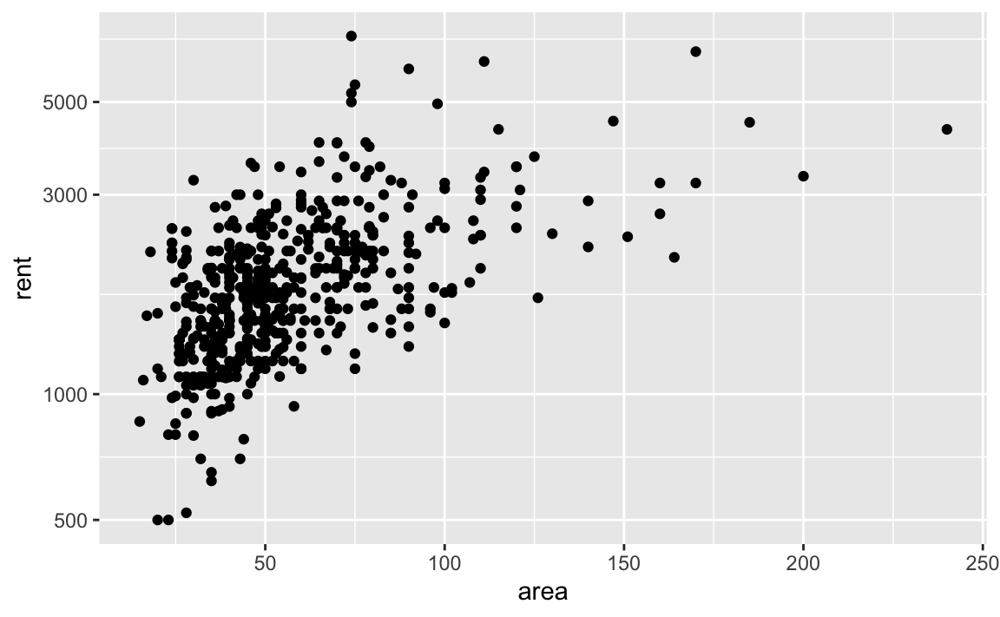
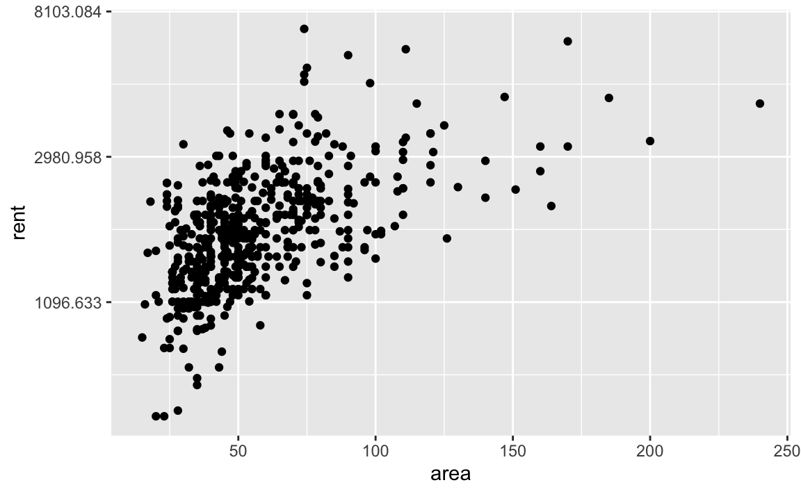
label_number()label_percent()label_dollar()
No padrão brasileiro, big.mark = "." e decimal.mark = ","
Datas
ggplot(economics, aes(x = date, y = psavert)) +
geom_line() +
scale_x_date(date_breaks = "5 year", date_labels = "%Y")
house_prices <- txhousing %>%
filter(city == "Garland", year %in% 2007:2010) %>%
mutate(date = lubridate::make_date(year, month))
ggplot(house_prices, aes(x = date, y = sales)) +
geom_line() +
scale_x_date(date_breaks = "3 month", date_labels = "%Y\n%b")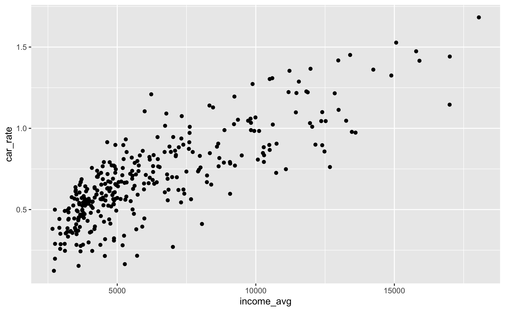
prices_austin10 <- txhousing %>%
filter(city == "Austin", year %in% 2010:2011) %>%
mutate(date = lubridate::make_date(year, month))
ggplot(prices_austin10, aes(x = date, y = sales)) +
geom_line() +
scale_x_date(
breaks = seq(as.Date("2010-01-01"), as.Date("2011-12-01"), by = "month"),
date_labels = "%Y-%m"
) +
theme(
panel.grid.minor = element_blank(),
axis.text.x = element_text(angle = 90)
)
aluguel <- mutate(aluguel, room = factor(room))
base_plot <- ggplot(aluguel, aes(x = room, y = rent, fill = room)) +
geom_bar(stat = "summary_bin", fun = mean) +
theme(legend.position = "none")
base_plot + scale_fill_brewer(type = "qual", palette = 2)
base_plot + scale_fill_brewer(type = "qual", palette = 6)
base_plot + scale_fill_brewer(type = "qual", palette = 7)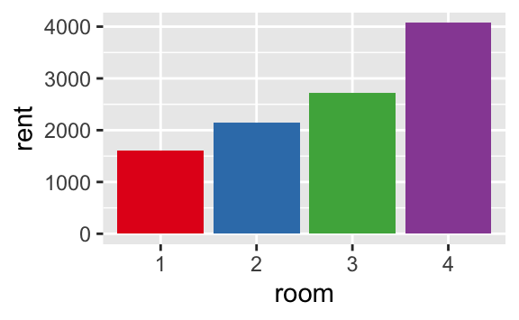
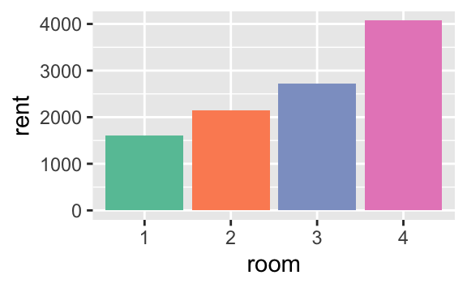
txhousing %>%
filter(year == 2010) %>%
summarise(total = sum(sales), .by = "city") %>%
arrange(desc(total))# A tibble: 46 × 2
city total
<chr> <dbl>
1 Houston 56807
2 Dallas 42383
3 Austin 19872
4 San Antonio 18449
5 Collin County 10703
6 Fort Bend 8503
7 Fort Worth 8238
8 NE Tarrant County 6420
9 Denton County 5953
10 Montgomery County 5941
# ℹ 36 more rowssub <- txhousing %>%
filter(
city %in% c("Austin", "Dallas", "Houston", "San Antonio"),
year == 2010
)
ggplot(sub, aes(x = month, y = sales)) +
geom_col(aes(fill = city), position = position_fill()) +
scale_y_continuous(labels = label_percent()) +
scale_fill_viridis_d()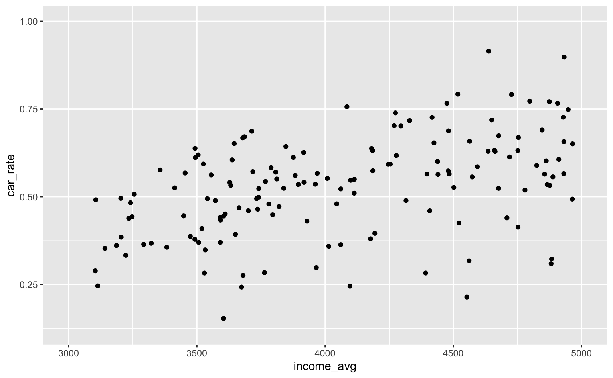
top_sales <- txhousing %>%
filter(year == 2010) %>%
summarise(total = sum(sales), .by = "city") %>%
slice_max(total, n = 15) %>%
mutate(city = factor(city), city = forcats::fct_reorder(city, total))
ggplot(top_sales, aes(x = city, total)) +
geom_col() +
coord_flip() +
scale_x_discrete(labels = function(x) stringr::str_wrap(x, width = 10)) +
theme(axis.text.y = element_text(hjust = 0.5))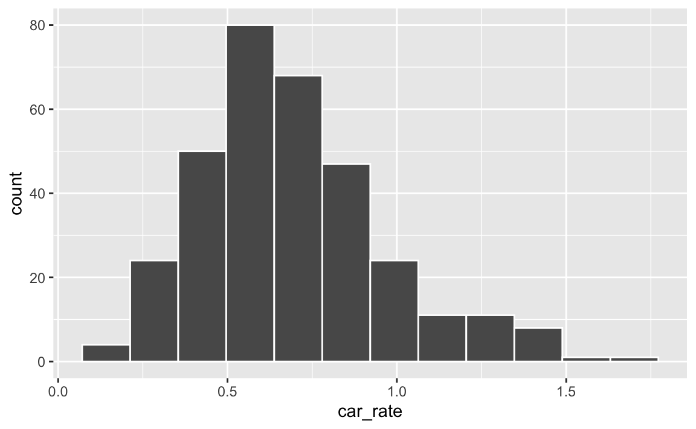